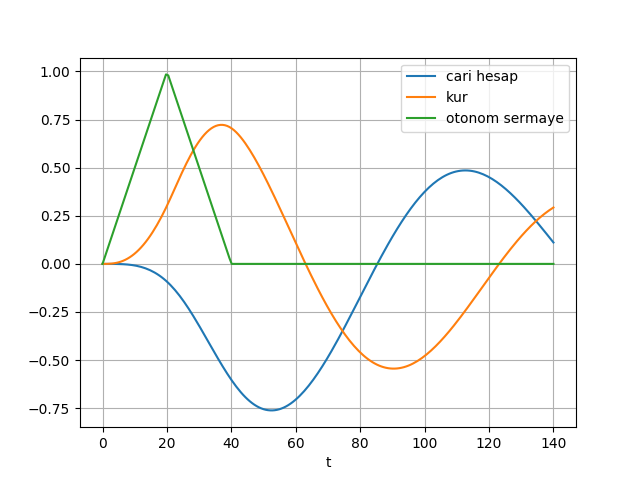

Temel alacağımız araştırma [1] kur fiyatlarının belirlenmesinde iki faktör olduğunu öne sürüyor. Birincisi basit bir önerme, kur piyasalarında belli döviz çeşitlerine olan talep, o paranın arzı o paranın fiyatını belirler. Fakat bu alanda çoğunlukla kullanılan akış modeli uzun vadeli dinamik perspektifi gözönüne almadığı için hep doğru sonuçlara varamaz, ayrıca bu modeller cari işlemler hesabı (current account), finans hesabı, ve uluslararası ödemelere de yakından bakmaz. Fakat biliyoruz ki uluslararası ödeme akışlarının kurlar üzerindeki etkisi var, birazdan sunacağımız modelde bunun uzun vadeli olarak nasıl ortaya çıkarılacağını göreceğiz.
İkinci faraziye uluslararası döviz işlemlerinin ödemeler dengesi işlemleriyle yakından alakalı olduğu. Ödemeler dengesi tabii ki bir değişmez eşitlik, girenler, çıkanlar var, ve toplam hep sıfır olmalı. Biz bu eşitliğin öğelerinin para akışlarına ve kur fiyatlarına etkisine yakından bakacağız.
4 tane farklı model gösterilecek. 1’inci model dışa kapalı bir ekonomi, ki bu ekonomideki cari işlemler hesabındaki işlemler, mesela ihracat ve ithalat direk nakit ile ödeniyor. Bu ve takip eden tüm modellerde cari ödeme dengesi ülkenin parasına ve ona kıyasla diğer dövizlere olan bir talep yaratıyor ve bu fiyatı belirliyor, ayrıca ülkenin reel kuru da cari işlem hesabı da kurdaki değişimlere göre kendini ayarlıyor. Yani birbirini ardı ardına etkileyen, dinamik bir durum var ortada. Göstereceğiz ki bu gayet gerçekçi iki faraziye ile başlangıçtaki cari işlem dengesizliklerinin uzun vadeli kur yalpalanmalarını görmek mümkün.
2’inci modelde cari işlem dengesizlikleri borç ile telafi ediliyor, bu gerçek dünyada olan duruma oldukca yakın. Borç faktörünün denkleme girmesi ödemeler akışında bir zamansal gecikme ortaya çıkartır, ve bunun sonucu cari işlemler hesabının kur üzerindeki etkisinin daha zamana yayılmasıdır. Hala cari işlemler ile kur dolamlı olarak birbirlerini etkilerler, sadece bu iki değişken arasındaki etki zamanı daha artar. Bu modelin Japonya örneğini çok iyi açıkladığını göreceğiz.
3’üncü model ülkeye geçici, otonom şekilde (borç amaçlı değil, bağımsız farklı sebeplerle, mesela yatırım) giren sermaye akışlarının etkisine bakacak. Makul bazı faraziyeler sonrasında bu tür girişin ülke kuru üzerinde cari işlemlerde bozulma olsa bile geçici bir değerlenme yarattığını göreceğiz. Bu model ABD’nin erken 80’li ve geç 90’li yıllardaki tecrübesini simüle edecek. Her iki durumda da ülkeye kuvvetli para girişi vardı, ve ABD doları cari işlemdeki müthiş artmakta olan açıklara rağmen değer kazanıyordu.
Aynı tema ama biraz farklı bir açıdan, 4’üncü modelde, sabit kura sahip olan bir ülkeye bakıyoruz. Bu modelde geçici yabancı sermayesinin nasıl cari işlemlerde bozulmalar yaratabileceğini görüyoruz, bu yabancıların alacaklarını arttırır, ve rezervlerin tükenerek nihai olarak kurun çakılması sonucunu getirir. Bu dinamik kalıp son derece basit varsayımlardan yola çıkarak oluşturulabiliyor, ayrıca bu dünyada görülen pek çok döviz krizlerinden bilinen anektodsal tecrübe ile de uyuşuyor. Gerçek veri bağlamında bu model için 1997-98 Güney Kore örneğine bakacağız.
Tüm modellerde enflasyon farkı yok kabul edilecek, çünkü bozuk bazı örnekler hariç pek çok ülkede enflasyon ile savaş düşük enflasyon seviyelerini ortaya çıkarttı.
Bazı terimler,
\(z(t)\): Cari işlem hesabı (current account)
\(q(t)\): Reel kur (real exchange rate)
\(k(t)\): Otonom sermaye akışı (autonomous capital flows)
\(r(t)\): Yabancı döviz rezervlerinin \(t\) anındaki satış miktarı (official sales of foreign reserves)
\(d(t)\): Borç için giriş yapan sermaye, normal şartlarda cari işlemler dengesizlikleri bu giriş ile finans ediliyor
\(c(t)\): Uluslararası ödeme girişleri (ınternational payment flows)
İlk denklem kur ile uluslararası ödeme girişleri arasında bir ilişki kurar.
\[ \dot{q} \approx -\xi c(t) \qquad (5) \]
Bu denklem uluslararası nakit girişi bir ülkenin kurundaki değişimi etkileyen faktördür diyor. Modeli geliştirmek için her ödeme dengesi öğesinin nasıl değiştiğini, ve bu öğelerin kurdan nasıl etkilendiğine bakacağız.
Diğer bir açıdan reel döviz kurunun ticari dengeyi etkileyen ana faktör olduğunu varsayacağız, bu da tabii ki cari işlem hesabı \(z(t)\)’yi etkileyecek. Kuvvetli bir yerli para o ülkenin rekabet avantajını kötü yönde etkiler, bu durum ticari dengeyi aşağı çeker. Diğer yandan zayıf para ticari dengeyi düzeltir.
\[ \dot{z}(t) = -\phi_1 z(t) - \phi_2 q(t) \qquad (6a) \]
Parametre \(\phi_1\) cari hesabın bir denge noktasına dönüş hızını tanımlar.
Ödemeler dengesi,
\[ z(t) + d(t) + k(t) + c(t) + r(t) = 0 \qquad (8) \]
ile belirtilebilir. O zaman, eğer ülkenin kendisi döviz piyasasında müdahelede bulunmuyorsa, uluslararası ödeme akışları \(c(t)\) o ülkenin cari işlem ve finans dengesiyle tanımlıdır,
\[ c(t) = -z(t) - k(t) - d(t) \qquad (9) \]
Bu denkleme \(r(t)=0\) ve (8)’in tekrar düzenlemesi ile ulaşılıyor.
Ama ülke kurundaki dalgalanmaları azaltmak isterse, o zaman sınırötesi ödeme akışlarını telafi etmelidir, çünkü o akışlar, (5) denklemine göre kurunu direk etkileyecektir. Bu durumda eldeki rezervden yapılacak net satış
\[ r(t) = -z(t) -k(t) -d(t) \qquad (10) \]
olur.
Modeller
Aksi belirtilmedikçe tüm modeller alttaki sabitleri kullanır,
\[ \xi = 0.1, \phi_1 = 0.03, \phi_2 = 0.06, \phi_3 = 0.1, \gamma = 0.05 \]
Model 1
\[ q(0) = 0, z(0) = 1 \]
olsun. Bu modelde uluslararası nakit akışı ödemeler dengesi (8) üzerinden tanımlanır, ve borç, otonom sermaye, müdahele olmadığı için \(d(t)=k(t)=r(t)=0\)’dir. Geri kalan \(c(t) = -z(t)\).
from scipy.integrate import odeint
import pandas as pd
phi1 = 0.03
phi2 = 0.06
gamma = 0.05
xi = 0.1
def dsys1(y, t):
z, q = y
return [-(phi1*z) - (phi2*q), xi*z]
t = np.linspace(0, 140, 200)
y0 = [1.0,0.0]
sol = odeint(dsys1, y0, t)
df = pd.DataFrame( sol )
df.columns = ['cari hesap','kur']
df['t'] = t
df = df.set_index('t')
df.plot(grid=True)
plt.savefig('mod1.png')
Almanya’nın cari hesabı ve parasına bakalım, NEER rakamları üzerinden,
import pandas as pd
df = pd.read_csv('de.csv',parse_dates=True,index_col=0)
ax1 = df.BPBLTT01DEQ188S.plot(color='blue', grid=True, label='cari islem hesabi')
ax2 = df.DE.plot(color='red', grid=True, label='neer',secondary_y=True)
h1, l1 = ax1.get_legend_handles_labels()
h2, l2 = ax2.get_legend_handles_labels()
plt.legend(h1+h2, l1+l2, loc=2)
plt.savefig('neer-de.png')
NEER terimi nominal efektiv kur fiyatı (nominal effective exchange rate) anlamına gelir. NEER bir ülkenin parasının diğer bazı ülkelerin dövizlerinden oluşan bir sepete olan karşılığını ölçer. Kabaca yabancı döviz almak için bir ülkenin parasından ne kadar gerekeceği sorusunun cevabını verir.
Model 2
Şimdi cari işlem hesabının bir kısmı borç ile finans edilince ne olur ona bakalım. Bunun etkisi ödeme akışları üzerinde bir gecikmedir, çünkü cari hesabın kur üzerindeki etkisi zamana yayılır. Cari hesap ile kur yine dolamlı bir şekilde hareket eder, ama bu iki değişken arasındaki etkisel zaman farkı büyür. (9) şu hale gelir (\(k(t)\) hala sıfır),
\[ c(t) = -z(t) - d(t) \]
\[ \dot{q} \approx -\xi c(t) = -\xi (z(t) + d(t)) \]
[1]’deki borç dinamiğini biraz değiştirmek mümkün, orada
\[ d(t) = -(z(t) + k(t)) - \gamma D(t) \]
kullanılmış, ki \(D(t)\) \(t\) anına kadar olan tüm \(d(t)\) üzerinden bir entegral, ki bu entegralin \(\gamma\) kadarı \(t\)’de geri ödeniyor. Analitik çözümle rahat işlediği için böyle seçilmiş, biz \(t\) anına kadar olan tüm borcu \(d(t)\) ile göstereceğiz, ve azalma dinamiğini \(d\) üzerinden ekleyeceğiz. \(z(t)\) ve \(k(t) = 0\)
\[ \dot{d} = -\dot{z}-\gamma d(t) \qquad (7) \]
from scipy.integrate import odeint
import pandas as pd
phi1 = 0.03
phi2 = 0.06
gamma = 0.1
xi = 0.04
def dsys2(y, t):
z, q, d = y
zdot = -(phi1*z)-(phi2*q)
return [zdot, xi*(z+d), -zdot - gamma*d ]
t = np.linspace(0, 140, 200)
y0 = [1.0, 0.0, -1]
sol = odeint(dsys2, y0, t)
df = pd.DataFrame( sol )
df.columns = ['cari hesap','kur','borc']
df['t'] = t
df = df.set_index('t')
df.plot(grid=True)
plt.savefig('mod2.png')
Üstteki grafik tezimizi doğruladı, cari hesap ile kurun dalgalanma frekansı azaldı, ve iki değişken arasındaki makas açıldı.
Veri Örneği; Japonya
Borç akışının Japonya’nın ekonomik performansı üzerinde bir rol oynadığı iddia edilebilir. 1970 sonları 80 başlarına kadar borç varlıklarına olan Japonya’dan çıkış ya da giriş akışı çok azdı. Fakat 80’lı yıllar ortasında bu akışlar büyüdü, bu büyüme çoğunlukla Japonya’nın ABD’ye olan finansal yatırımlarıyla açıklanabilir. Bunlar olurken cari işlem ve Japon para birimi Yen arasında 70’lı yıllarda fazla olmayan fark 80/90’li yıllarda çok daha arttı, ki bu durumu modelimiz gayet iyi tahmin ediyor.
Model 3
Bu modelle ülkeye otonom sermaye girişini formüllere dahil ediyoruz, yani artık \(k(t) \ne 0\) olacak. O zaman,
\[ c(t) = -z(t) - d(t) - k(t) \]
Ve \(k(t)\) sıfır olmadığı için,
\[ \dot{q} \approx -\xi c(t) = -\xi (z(t) + d(t) + k(t)) \]
Bu sermaye girişleri dışsal etkiler, sistem dinamiklerinin etkilediği oluşlar değil, onları bir dış fonksiyon olarak tanımlıyoruz. Simülasyon amaçlı belli zaman aralıklarında belli değerler veren bir kademeli fonksiyon olarak bu oluşu tanımlayabiliriz, mesela,
\[ k(t) = \left\{ \begin{array}{l} 0.05 t \quad 0 \le t < 20, \\ 2 -0.05t \quad 20 \le t < 40 \\ 0 \quad 40 \le t \end{array} \right. \]
Türevi de lazım olacak,
\[ \dot{k}(t) = \left\{ \begin{array}{l} 0.05 \quad 0 \le t < 20, \\ -0.05 \quad 20 \le t < 40 \\ 0 \quad 40 \le t \end{array} \right. \]
from scipy.integrate import odeint
import pandas as pd
def k(t):
if t >= 0 and t<20.0: return 0.05*t
if t >= 20.0 and t<40.0: return 2.0-0.05*t
else: return 0
def dk(t):
if t >= 0 and t<20.0: return 0.05
if t >= 20.0 and t<40.0: return -0.05
else: return 0
from scipy.integrate import odeint
import pandas as pd
phi1 = 0.03
phi2 = 0.06
gamma = 0.2
xi = 0.05
def dsys3(y, t):
z, q, d, k = y
zdot = -(phi1*z)-(phi2*q)
qdot = xi*(z+d+k)
kdot = dk(t)
ddot = -zdot -kdot - gamma*d
return [zdot, qdot, ddot, kdot ]
t = np.linspace(0, 140, 200)
y0 = [0.0, 0.0, 0, 0.0]
sol = odeint(dsys3, y0, t)
df = pd.DataFrame( sol )
df.columns = ['cari hesap','kur','borc','otonom sermaye']
df['t'] = t
df = df.set_index('t')
df[['cari hesap','kur','otonom sermaye']].plot(grid=True)
plt.savefig('mod3.png')
Sermaye girişi arttıkça yerel paraya olan talep artıyor. Bu durumda cari hesap bozuluyor, bu tecrübeyi yaşayan pek çok ülkede olduğu gibi. Ortaya çıkan cari işlem açığı bir süre sonra gelen otonom sermayeden daha fazla oluyor, çünkü bağımsız sermaye geçici. Tabii ülke borç alarak açıgı kapatabilir. Fakat açık orada durduğu sürece ve borcun geri ödenmesi gerektiği için ülke bir süre sonra kendisini içeri aldığından daha fazla dışarı para gönderir halde buluyor. Bu durumda değerlenmekte olan yerel para düşmeye başlıyor. Ama cari hesapta düzelmeye dönmek için bu düşüşün bir süre daha devam etmesi gerekiyor.
Model 4
Şimdi sabit kurlara ve bu tür kura sahip ülkelere ödemelerin nasıl girip çıktığına bakalım, ve rezervlerin her şeyi nasıl etkilediğini inceleyelim. Amacımız sayısal ve anektodsal delillere uyan bir döviz piyasa krizini modellemek.
(6a)’yı değiştiriyoruz,
\[ \dot{z}(t) = \phi_1 z(t) - \phi_2 q(t) - \phi_3 k(t) \]
drfun içinde bunu yaptık, belli bir zaman aralığına gelince
bu türevde inişi zorlayacağız, rezerv “bitmeye’’ başlayacak ve \(r(t)=0\) olana kadar bu düşüş simüle
edilecek. Bu”devalüasyon’’ gerçekleştikten sonra daha fazla döviz piyasa
müdahelesi olmayacak.Bir önceki modelde olduğu gibi ülke sıfır borçla başlıyor, geçici bağımsız sermaye girişi yaşanıyor, bkz (13). Ayrıca uluslararası nakit akışı ve net rezerv satırları (9) ve (10) ile kontrol edilecek.
from scipy.integrate import odeint
import pandas as pd
def drfun(rr,t):
if t <= 40: return rr
elif t > 40 and t<50: return -0.07
else: return 0
phi1 = 0.03
phi2 = 0.06
phi3 = 0.1
gamma = 0.1
xi = 0.05
def dsys4(y, t):
z, q, d, k, r = y
c = -z - d - k - r
qdot = -0.01*c
zdot = -phi1*z - phi2*q - phi3*k
kdot = dk(t)
ddot = -zdot-kdot-gamma*d
rdot = drfun(-zdot -ddot - kdot, t)
return [zdot, qdot, ddot, kdot, rdot ]
ts = np.linspace(0, 140, 200)
y0 = [0.0, 0.0, 0, 0.0, 0.0]
sol = odeint(dsys4, y0, ts)
df = pd.DataFrame( sol )
df.columns = ['z','q','d','k','r']
df['t'] = ts
df = df.set_index('t')
df[['z','q','k','r']].plot(grid=True)
plt.savefig('mod4.png')
Sonuçlar görülüyor. Daha önceki modelde olduğu gibi otonom sermaye girişi yurtiçi tüketimi ve yatırımı teşvik ediyor, cari hesapta bozulmaya sebep oluyor. Bu ilk bölümde ülke rezervlerini doldurabiliyor, çünkü toplam sermaye akışı ortaya çıkan cari işlem hesabı açıgından daha fazla. Fakat bağımsız sermaye girişi geçici, ve yabancılar tüm açığı finanse etmek istemiyorlar. Bir noktada ülkenin rezerv satarak kurun düşüşünü durdurmaları gerekiyor. Fakat rezervlerin bitmesiyle ortaya çıkan sabit kur rejiminin bitişiyle ülkenin parası düşüşe geçiyor.
Üstteki Kore örneğinde bu tür bir krizi görebiliyoruz. Pek çok gelişmekte olan ülkede olduğu gibi Kore de ilk ve orta 90’lı yıllarda güçlü sermaye girişi aldı. Bu girişlerin önemli bir sebebi cari hesap kontrollerinin gevşetilmiş olmasıydı. 1996 yılına gelindiğinde Kore’nin dünya ticaretinin yüzdesi olarak cari hesabı rekor seviyelere ulaşmıştı, ve sürdürülebilirlik sorunu ortaya çıkmaya başladı. Her ne kadar cari açık 97’de biraz azalmış olsa da bu Kore parası won ve komşu bazı diğer ülke paralarının düşüşünü engelleyemedi. Halbuki Kore ülke içi yatırımlara ek olarak rezervlerini de sağlamlaştırmıştı, böylece won’u kuvvetli tutuyorlardı. Ama sonuç olarak cari hesap açığı ve onun etkisiyle Kore döviz kuru sürdürülemez hale geldi. Yabancı yatırımcıların güvenlerini kaybedip paralarını çekmeleri sadece çöküşü daha hızlandırdı.
Kaynaklar
[1] Nikolas Müller-P, Balance of payments accounting and exchange rate dynamics, https://www.researchgate.net/publication/46490787_Balance_of_payments_accounting_and_exchange_rate_dynamics